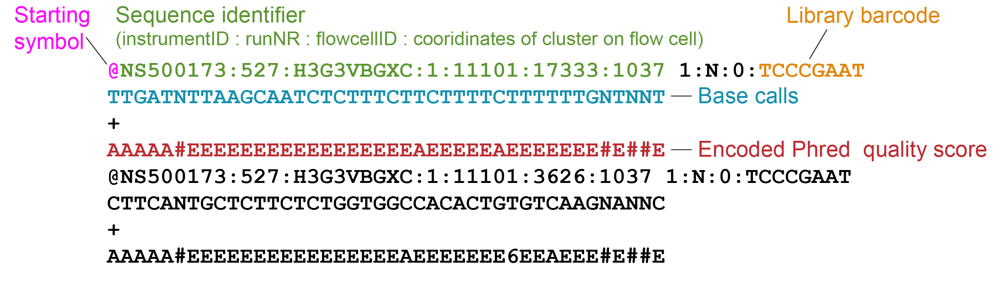
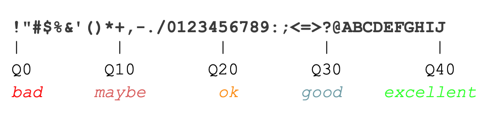
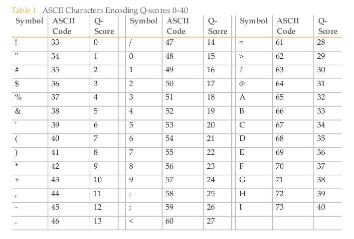
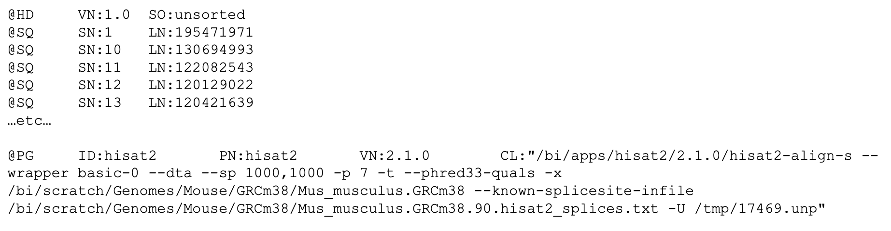
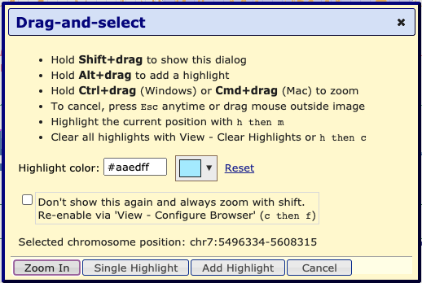
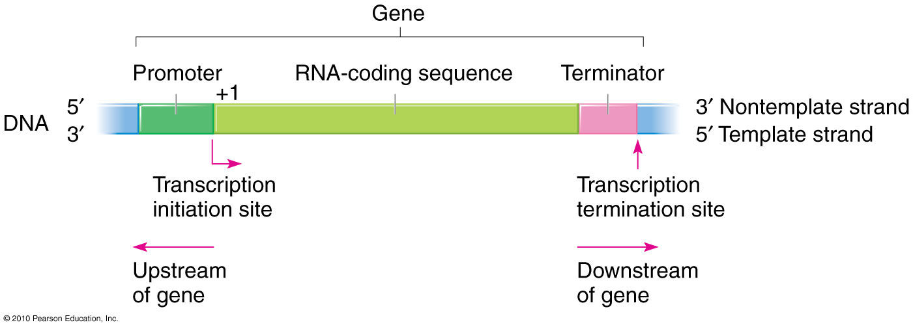
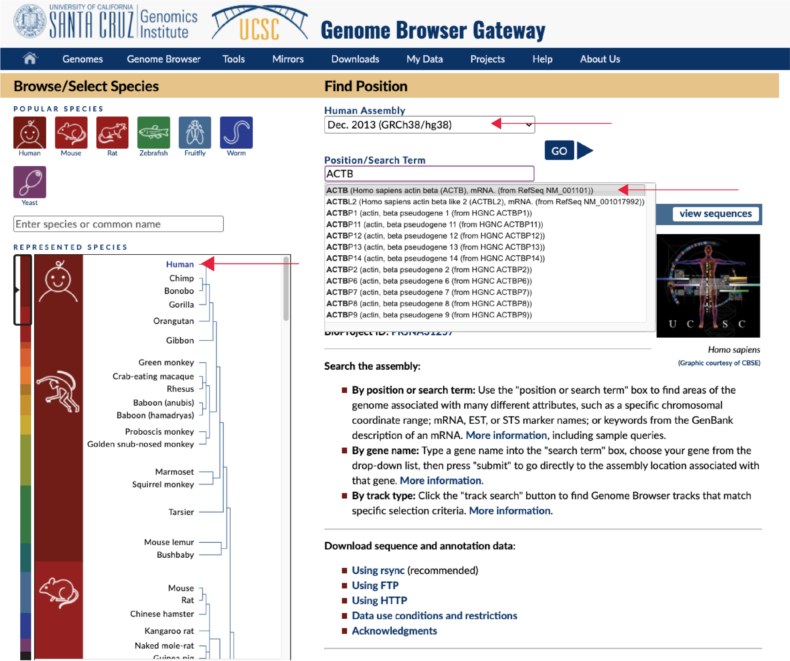
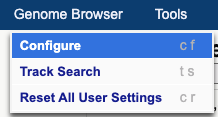
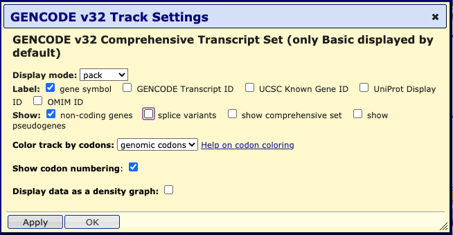

1. UCSC Genome Browser
1.1 Learning Objectives
This week’s focus will be on how sequencing data is processed and acquint ourselves with the UCSC Genome browser as a tool to visually inspect (epi-)genomics data.
At the end of week 1 you are able to
- Explain the steps taken to go from a ChIP-seq experiment, to raw data, and finally to data usable for analysis.
- Recognize the following elements in the UCSC genome browser: chromosome, centromere, telomere, gene, exon, intron, utr, promoter, and (candidate) enhancer/repressors.
- Go to regions of interest in the genome browser.
- Explain the difference between ‘uptream’ and ‘downstream’.
- Identify peaks in the coverage tracks of a histone ChIP-seq experiment in the genome browser.
- Identify tracks of H3K27ac, H3K27me3, H3K36me3, H3K4me1, H3K4me3 and H3K9me3 histone ChIP-seq and DNaseI-seq signal (and ChIP-seq input) based on their coverage profile and their location with respect to genes and other annotated genomic/chromosomal elements.
- These refer to Global learning objectives #1-3.
1.2 Sample --> raw data
Briefly review ChIP-seq, library preperation for next-generation sequencing and analysis of the resulting data with the following video:
ChIP-seq by StatQuest, duration of 8:30:
ChIP-seq by SatQuest
Click here for additional information about Illumina sequencing.
Background: There are several manufacturers of sequencing machines and reagents. Illumina is a common one. The Illumina technology is summarized in the following videos (optional):
- Introduction to Illumina Sequencing, Rob Edwards, duration 2:45
- Illumina Sequencing Technology, Illumina, duration 5:03
In summary, Illumina sequencing involves:
- Library preperation (also called sample preperation):
- Extract DNA from your sample.
- Fragment this DNA.
- Ligate adapters to the fragment these contain a sample specific sequence (= barcod or index), regions complementary to oligo’s that are found on the flow cell (these oligo’s are called P5 and P7) and primer bindings sites for sequencing (Rd1 SP and Rd2 SP):
- Load library on the flow cell:
- The flow cell is a glass slide with P5 and P7 oligo’s attached to the surface.
- The DNA fragments are denatures and single stranded fragments anneal to P5 and P7 oligo’s present on the flow cell.
- Cluster growth:
- Fragments are amplified, the P5 and P7 oligo’s are used as the primer for this process ensuring that the final molecule is attached to the flow cell.
- Multiple amplification cycles result in a cluster of fragments.
- This procedure occurs for millions of fragments resulting in millions of clusters.
- The reverse strands are cleaved, ensuring that the same strand is used for sequencing within each cluster.
- Sequencing by synthesis:
- Sequencing primer (Rd1 SP) is added and 4 fluorescently labelled nucleotides compete for incorporation in the growing strand.
- Image acquisition: A laser excites the clusters and the signal from the incorporated nt is measured.
- The emmission wave length and signal intensity determine the base call and the quality of the reading.
- A special index read primer is used to sequence the barcode.
- For paired-end sequencing, the above procedure is repeated with the reverse strand.


The sequencer analyzes a set number of bases, eg 42, 50 or 100 bp, called a read. The resulting base calls and their quality scores are stored in fastq files which have the .fq or .fastq extension (or compressed as .fq.gz or .fastq.gz). These are always organized in the same manner with 4 lines per read. This is an example with 2 DNA sequences (8 lines):

- Header starts with ‘@’-sign and contains a unique sequence ID (the element up to the fist space). This header often follows a set substructure. Element after the space often includes the sample barcode.
- Called bases in ACGTN-alphabet
- Midline, can be empty or hold ‘+’
- Quality score for each nucleotide, also called Phred score.
The Phred scores represents the probability (p) that the reported call is incorrect. You do not need to learn this encoding by heart but they will come back in the Quality Control step of our analysis, therefore we discuss briefly how they are encoded:
| Phred quality score | Probability of incorrect base call | Accuracy | Characterer | |
|---|---|---|---|---|
| 0 | 1 in 1 | 0% | ! | |
| 10 | 1 in 10 | 90% | + | |
| 20 | 1 in 100 | 99% | 5 | |
| 30 | 1 in 1000 | 99.9% | ? | |
| 40 | 1 in 10000 | 99.99% | J |
Here’s another visualization of how Phred scores are encoded :

Here’s the complete encoding of Phred scrores 0-40.
Background:

Before we can start our data analysis and identify for example regions marked by activating and repressing histone marks, we need to process the raw data. This includes cleaning up, mapping, visualizing the sequenced reads and identifying genomic regions where reads tend to pile up (in other words “peaks”). Which is what we will discuss next.
1.3 Raw data --> science
1.3.1 Post-sequencer processing
The sequencer determines the sequence of the DNA molecules in your sample and produces massive amounts of data. In an ideal world, these data would 100% reflect reality. But….. It doesn’t and it is often your or a bio-informaticians task to discriminate valuable signal from artefacts and noise, the latter being accumulations of reads in regions that don’t actually contain binding sites of the protein or mofidified histone of interest.

A general pipeline for ChIP sequencing data involves several following steps. In theory, all of them can be performed in R but the first steps are commonly performed by tools outside R (often on Linux server). The resulting peakfiles, files with read depth and/or read counts are then imported in R.
Here we will discuss the steps that are necessary to turn the raw before we can start our analyses in R:
1. Run a quality check on the raw data
We run the raw fastq files through FASTQC software to get a quick impression of whether our data has any technical problems of which we should be aware before doing any further analysis. This tools outputs a HTML report with graphs and tables summarizing, among others the base call accuracy, library base composition, duplication levels and the presence of overrepresented sequences.
The Per base sequence quality plot is one of the most important plots generated. It summarizes the base call accuracy (Y-axis) for each cycle (X-axis) across the library. See this example:

This exmaple shows the average Phred quality for a library sequenced to 72 bp. The majority of bases have a good quality, the quality drops for the last two bases and we should (in this case) remove these from the end of the read.
For most runs, quality should be good for most reads through the whole run. If quality is low, we can use the other plots and tables to try to understand why this is.
- Good (Illumina) quality is generally Phred > 28 - 30
- Concerning (Illumina) quality is Phred < 20
If the QC does not support major technical problems like a systematic base bias that occured during sequencing or contamination during sample prep with foreign DNA, we can continue.
Exercise 1
Use the following two FASTQC reports to answer the following questions.
quiz(
question("What is the sequence length?",
answer("45"),
answer("40", correct = T),
answer("Can't be answered using these reports"),
allow_retry = TRUE,
random_answer_order = TRUE),
question("Which shows the **best per base sequence quality**?",
answer("report 1", correct = T),
answer("report 2"),
allow_retry = TRUE))Background: For detailed discussion on FASTQC reports see the FASTQC website of the Babraham institute, and their tutorial on Quality Control in Sequencing Experiments ref.
2. Trim and quality-filter reads
In this cleaning step we predominantly:
- Remove reads composed solely of adapters without insert.
- Remove reads with an overall low-quality.
- Remove or mask low-quality bases within predominantly high quality reads (if these occur, they are often the last one or two bases for Illumina sequencing). This can result in the complete removal of some reads because of their overall low quality or short length.
3. Align reads to the genome
Next Generation Sequence (NGS) alignment means that we identify the likely location in the reference genome where the original DNA molecule came from. This process is called aligning and is performed by alignment tools, also called read mappers. Well known examples include STAR, BWA and bowtie2. In essence, these tools perform the same tasks but with different algorithms/strategies.
Since the publication of the human genome, successive versions have been released (also called assemblies or builds). The improvements in quality are thanks to technological advancements as well as improvements in the representativeness of the genome with respect to the genetic diversity found in the human population. We will work with (one of) the latests relaese referred to as GRCh38 or hg38 (Genome Reference Consortium Human Build 38).
The aligner thus requires as input the quality-filtered and trimmed fastq files together with the reference genome.
The outputted alignment is stored in (huge! ) TAB-delimited text Sequence Alignment Map files, SAM files. The compressed version of SAM files are called BAM files (Binary Alginment Map).
Click here for additional information about SAM/BAM file format.
Background: The SAM/BAM files contains a header with information about the mapping procedure. This is followed by the read alignments with 1 line per read. The latter contains information about the read sequence, how much of it was mapped to the reference genome (eg. the whole read or only part of it), how well it alinged, and lots of other information, dependent on the aligner.
To give you a feel for how SAM files looks like, here’s an example of the header and one record:

This example tells you among others that the library was mapped with hisat2 to the mouse reference genome GRCm38 with certain additional settings. The single displayed read is mapping to chr18, starting at position 57944851.
In summary:
Each record holds at least 11 columns (exact number depends on the aligner and post-alignment analytics performed on the file):
ColumnNR Description Example 1. Read name HWI-D00436:394:CBGLBANXX:1:1101:1222:1861 2. 12 “bits” flag summarizing of the alignment. Webtools to explain the meaning of each flag: samformat, or Broad Institute 16 3. Chromosome in the reference genome the read aligns chr18 4. Position within the chromosome the read aligns 5794485 5. Mapping quality score, different programs use different scores 60 6. CIGAR string, is a summary of the alignment per nt 50M 7. Chromosome where the paired read aligns chr18 (if there is no paired read 0 or *) 8. Position within where the paried read aligns 5794685 (or 0 if there is no paired read) 9. Length of the complete fragment, from the first mapped base of read 1 to the last mapped base of read 2. 200 (0 if there is no pair) 10. Called bases AAAAGATCTCTTGAT… 11. Phred quality score of the read GGGGGGGGGGGGGGG…


4. Filter artefacts and reads aligning to multiple regions
From the initial alignment we often identify and remove PCR artefacts, reads aligning with a low mapping quality (column 5) and optionally remove reads aligning non-uniquely. These actions can be performed with various tools. Commonly used ones are SAMtools and Picard tools. The input and output of these steps are both BAM files.
5. Visualize read depth
Files are created that count how many reads align to each nucleotide in the reference genome. Nucleotides with a relative high score pinpoint the likely locations of the ChIPped factor or histone PTM; to a region of accessible chromatin in ATAC-seq; or to the region that was likely transcribed and detected in RNA-seq.These files can be uploaded to the UCSC Genome Browser which we will look at in more detail today as well. Various file types can store this kind of data. We wil use bigwig files (.bw file extension), these are fast and relatively small but we can’t view them.
A fictional example of alignment and a read depth graph

6. Call peaks
Reads are scattered through the genome but locations where the used antibody recognizes its target (eg. DNA-binding TF, histone, histone variant or histone PTM) will collect more reads. Peak calling is the computational process to identify these regions, often with respect to a control dataset where no antibody or no specific antibody was used, resp. input control and IgG control . A commonly used tool for this step is MACS2. MACS2 was also used to call peaks in the datasets that we will be using.
Peak calling is a statistical procedure and never black and white. It depends among others on thresholds used (p-value, false-discovery rate) and the control sample. It is always wise to visually inspect the resulting peaks in the UCSC genome browser. If the called peaks do not correspond to the sites with high read coverage, you may need to adjust the settings for peak calling.
Peaks are repored as regions, or genomic intervals with their genomic coordinates: chr start end. As well as a score that indicates the strength of the signal observed for this peak. We will look at these files more closesly in week 2.
7. Read counting
Count reads that fall within genes, other genomic elements or peak regions. These counts and the actual peak locations are used for eg. differential gene expression analyses in RNA-seq or differential TF-binding in ChIP-seq (comparing differentiated vs undifferentiated or control vs treatment). A well-known, widely used tool for this purpose is DESeq2.
Sample clustering can be included here as additional QC. It should identify which samples are closely related and if they don’t, this might point to a label swap or more severe issue like not-working stimulus in one of the replicates.
Here’s an example of such a clustering, showing how different each sample is. Samples 15754-56 should be moslty similar and different from 15757-59, and vice versa:
Siebren: what’s the color legend representing?

8. Optionally: DNaseI footprinting, variant calling, novel gene identification and more
Depending on your experimental set up additional steps are performed outside R. For DNaseI-seq, we can identify small depleted regions within peaks that correspond to the nucleotides that interact with the TF. This interaction protects these nucleotides from DNaseI attacks. These so-called footprints can be used to identify TF motifs and predict the likely TF bound. Although this sounds simple, and for a stable binding factor like CTCF it may be the case, it is not always that simple in reality.
1.3.2 Common causes of noise and artefacts
Artefact and noise in your data can arise from various causes. Here’s a list of common causes:
- Synthetic DNA sequences
- Poor base call accuracy
- Amplification bias during library preparation
- Genomic repeats and Low complexity regions
Exercise 2: Below is a list of descriptions and methods to handle these arefacts. Read these carefully and combine what you think is the most likely description and method to handle the above mentioned artefacts.
Descriptions:
- The amount of nucleic acids you generally obtain from your cells is often too low to be directly analyzed and one or more steps of PCR are needed (unless you use special, amplification-free protocols and sequencing methods). Not all DNA or RNA molecules behave the same in this reaction. Some are amplified more than others.
- These include adapters ligated to the DNA molecules to allow their amplification with uniform primers during library prep and in the sequencer. These adapter sequences come with the kit or are designed by the researcher self.
- The chemical reaction and quality of the optical measurement that occur in the sequencer are not perfect and depend among others on the nucleotide composition of all samples, the length of the DNA molecules and the concentration of the samples. Each nt is therefore given a quality score that reflects the accuracy of the measurement.
Methods:
- We can control for this by using the input sample as the control during peak calling, paired-end sequencing and remove all fragments with exactly the same coordinates for read 1 and read 2, and/or the use of a unique molecular identifier (UMI) appended to our adapters that labels each unique DNA fragment.
- Remove low-quality nt’s from reads or remove reads altoghether if all their nt’s are of low quality.
- Filter these out of our dataset right after we get our data from the sequencer.
quiz(caption = "Which answers summarize the appropriate combinations of artefact - description - method?",
question("For (1) *Synthetic DNA sequences*",
answer("Description B; Method c", correct = T),
answer("Description C; Method b"),
answer("Description A; Method c"),
answer("Description C; Method a"),
allow_retry = TRUE,
random_answer_order = TRUE),
question("For (2) *Base call accuracy*",
answer("Description B; Method b"),
answer("Description B; Method c"),
answer("Description C; Method b", correct = T),
answer("Description A; Method b"),
allow_retry = TRUE,
random_answer_order = TRUE),
question("For (3) *Amplification bias during library preparation*",
answer("Description B; Method b"),
answer("Description C; Method b"),
answer("Description B; Method c"),
answer("Description A; Method a", correct = T),
allow_retry = TRUE,
random_answer_order = TRUE)
)Lastly, when trying to pinpoint the location in the reference genome where the DNA molecule most likely was derived off, we are confronted with Genomic repeats and Low complexity regions. Repetitive sequences such as short tandem repeats and interspersed repeats make up roughly 50% of the human genome. Reads produced by sequencers are generally shorter than the repeats, thus mapping them becomes ambiguous. When dealing with a read that maps to multiple places, there are usually 3 choices: (1) Discard them; (2) Take the best alignment, if there are multiple best hits take one randomly; (3) Report all alignments or report up to a certain number. The strategy you choose depends on the sample, the technology, your research question and the reference species you work with.
Exercise 2: Choose the right order of steps that is used for ChIP-seq data analysis from the following list of options
1.3.3 Alternatively: use FAIR data
In 2014 a core set of principles were drafted in order to optimize the reusability of research data, the resulting FAIR principles were published in 2016. They represent a set of guidelines and best practices to ensure that data or any digital object are Findable, Accessible, Interoperable and Re-usable with special emphasis on enhancing the ability of machines to automatically find and use data.

Findable: The first thing to be in place to make data reusable is the possibility to find them. It should be easy to find the data and the metadata for both humans and computers. Automatic and reliable discovery of datasets and services depends on machine-readable persistent identifiers and metadata.
Accessible: The (meta)data should be retrievable by their identifier using a standardized and open communications protocol, possibly including authentication and authorisation. Also, metadata should be available even when the data are no longer available.
Interoperable: The data should be able to be combined with and used with other data or tools. The format of the data should therefore be open and interpretable for various tools, including other data records. The concept of interoperability applies both at the data and metadata level. For instance, the (meta)data should use vocabularies that follow FAIR principles.
Re-usable: Ultimately, FAIR aims at optimizing the reuse of data. To achieve this, metadata and data should be well-described so that they can be replicated and/or combined in different settings. Also, the reuse of the (meta)data should be stated with (a) clear and accessible license(s).
An extensive list of databases for genomics research can be found here.
1.4 Data visualization: UCSC Genome Browser
UCSC GB sessions for making these exercises (tip: use right-mouse click to not loose this tutorial page):
- Default should look like (if it doesn’t, I need to adjust the text): http://genome-euro.ucsc.edu/s/ctoenhake/hg38_default
- Genes and ruler only: http://genome-euro.ucsc.edu/s/ctoenhake/hg38_genesonly
- Monocyte wiggle data (blueprint in colors, encode in black): http://genome-euro.ucsc.edu/s/ctoenhake/hg38_monos_blueprint_and_encode
- Monocyte wiggle + peak data, blueprint only: http://genome-euro.ucsc.edu/s/ctoenhake/hg38_monos_blueprint_wiglle_and_peaks
1.4 UCSC Genome Browser
1.4.1 UCSC Genome browser intro
Genome browsers are great tools to display genomics data. You can walk, or browse, through all chromosomes, look at the location of genes, extract DNA sequences, examine pre-loaded data or upload your own data. The latter comes in quite handy when you want to, for example, have a visual (personal) confirmation of data quality, evaluate the effect of different settings for processing the raw reads, and/or confirm as computationally detected associations.
Watch the following youtube video’s to get familiar with the UCSC Genome Browser:
Checklist:
- Watching video 1 you should be able to:
- Access your genome & assembly of interest in the UCSC Genome Browser.
- Find the chromosomal coordinates of the region currently in view or of a region you just selected (with click+drag).
- Go to a gene or region of interest.
- Zoom in and out.
- Recognize UTRs, exons, introns, and the direction of transcription.
- Find the length of a region or gene.
- Access your genome & assembly of interest in the UCSC Genome Browser.
- After watching video 2 you should be able to:
- Define what we mean with a track.
- Adjust the display of tracks: eg. full, pack, hide etc.
- Display tracks from the list of preloaded tracks below the browser (important: hit
refresh).
- Define what we mean with a track.
Additional important actions and terms that were not explicitly discussed in the videos:
Selecting a region in the genome browser: hold shift-key and click/drag with your left mouse key over the region. A pop-up appears to ‘Zoom in’, ‘Add highlight’ or ‘Cancel’ (cancel = do nothing).
Upstream and downstream refer to a position relative to the coding strand of a gene. Upstream means to the 5’ end and beyond. Downstream means to the 3’ end and beyond. Thus, depending on the orientation of the gene, upstream can mean that you move in the direction of the start of the chromosome or to the end of the chromosome.

1.4.2 Go to the UCSC Genome browser
Let’s go to the UCSC genome browser….
Action: Go to the UCSC Genome Browser (blue text is a link, use right-mouse click to open in new window).
The starting page has been updated since the video was made but still holds the same blue bar at the top with Genomes, Tools, etc.:
Tip: In case you have been here before, it is wise to reset user settings such that you don’t continue with settings from a previous project. For this, hover over “Genome Browser” and select “Reser All User Settings”.
Tip: A pop-up may appear now or one stap later, redirected you to the official European mirror site if those servers are geographically closer, that’s ok.
Action: To access the human genome, select the “Genomes” tab.
On the left you can browse and select the genome you are interested in (not a drop-down menu anymore as in the video). By default, the human genome is selected.
We can go to a position of our choice by entering the gene or chromosomal coordinates under Position/Search Term or immediatly go to the ‘Current position’ by clicking on GO on the right-hand side or Genome Browser in the menu bar on top.
Action: Ensure that “Human” is selected in the REPRESENTED SPECIES tree and “Dec. 2013 (GRCh38/hg38)” is selected under Human Assembly (red arrows in image below).
Action: Go to ACTB gene (gene coding for non-muscular actin part of cytoskeleton).
Genomes page, ready to go to ACTB gene in Human genome GRCh38:

To change the Image width of the browser (to fit your screen):
Tip: You can adjust the width of the browser to fit your (laptop) screen under “Genome Browser” > “Configure”. And adjust the “image width:” .. pixels. Hit
submitto apply the changed settings and return to the browser:


Your browser should be showing chromosomal region:
Hint: chr7:5,527,148-5,530,601.
As discussed in the video, in the top of the window we have navigation and zoom bottons. Right below we can read the chromosomal coordinates and length of the regions we are currently viewing (in this case the complete ACTB gene). Below that we see a miniature chromosome with the characteristic gray/black pattern from karyotyping. A red |-sign gives us an idea of our current positioning in the chromosome.
Figure for Question 1:

question("Question 1: What chromosome is ACTB located on? And is it located on the short or long arm of this chromosome?",
answer("chr7, short arm", correct = TRUE, message = "The *ACTB* gene is indeed located on the short arm of chromosome 7. In the coordinates bar and in the 'ruler' track we can see that we are looking at chromosome 7. By looking at the red |-sign in the chroosomal idiogram, we see that this gene is located to the left of the centromere (red diabolo within the idiogram) and thus ont the short arm."),
answer("chr7, long arm", message = "Where do you see the red |-sign in the miniature chromosome on top?"),
answer("chr17, short arm", message = "Review the UCSC Genome Browser Basics video, or find *chr#* in the browser window"),
answer("chr17, long arm", message = "Review the UCSC Genome Browser Basics video, or find *chr#* in the browser window"),
allow_retry = TRUE)
The data window displays various tracks or track sets. Tracks runs the complete length of the chromosome. Data includes most often:
- Positional information, of a gene, SNP or cir-regulatory element for example, often displayed as horizontal bars the thickness and color of which can hold additional information depending on the type of track.
- Signal information, of gene expression, detection of histone marks or degree of conservation. Often displayed as histograms but can also be summarized in vertical bars with different levels of color intensity encoding the signal intensity.
The method of display and whether individual tracks are displayed can be changed by:
- Right-mouse click on the grey, vertical bar at the left-most area of the Genome Browser shows you options
hide,dense,squish,packandfull. Additional adjustments to the track can be made by selectingConfigure [track name]in this menu.

- Scroll to the area below the data window, here you see a possibly overwhelming list of potential tracks, most are
hidden. Using the pull down menu you can change display settings of multiple tracks at once. Always make sure to hit therefreshbutton below the browser window to ensure all changes are performed.
Action: hide all tracks and tracksets except for the ruler and GENCODE v32 tracks.
Action: for GENCODE v32, via “Configure GENCODE v32”, make sure the option “splice variants” is unchecked.
Configuration window for GECODE v32 gene track with splice variants unselected:
Your GB session should look like this

We see the complete ACTB gene with exons as horizontally stretched rectangles and introns as horintal lines with arrowheads in them indicating the direction of transcription. The exons have different heights. The highest regions correspond to coding exons, the other regions are the 5- and 3UTR.
More information about ACTB can be obtained by clicking on the gene in the browser. Doing that brings you to a gene page like:

question("Question 2: How many exons does the *ACTB* gene have?",
answer("5", message = "exons are displayed as thicker lines in the gene, introns as lines with arrows in them."),
answer("6", correct = TRUE),
answer("7", message = "one exon can contain coding and non-coding (UTR) elements" ),
answer("8", message = "one exon can contain coding and non-coding (UTR) elements"),
allow_retry = TRUE)Figure for Question 3:

question("Question 3: Which letter points to the TSS?",
answer("A", message = "Pay attention to how directionality is visualized in the UCSC Genome Browser, discussed in video 1 at ±4:30"),
answer("B", message = "Pay attention to how directionality is visualized in the UCSC Genome Browser, discussed in video 1 at ±4:30"),
answer("C", message = "Pay attention to the visualization of UTRs, discussed in video 1 at ±5:10"),
answer("D", message = "Pay attention to the visualization of UTRs, discussed in video 1 at ±5:10"),
answer("E", correct = T)) question("Question 4: What statement about the *ACTB* gene is correct? (Select ALL that apply.) ",
answer("ACTB gene is encoded on the minus-strand", correct = TRUE),
answer("The TTS of ACTB gene has a higher coordinate than its TSS", message = "Look at the direction of arrows in the introns."),
answer("The coding size of this gene is appr 2kb", correct = TRUE),
answer("If we want to look at the promoter of this gene, we have to move slightly to the right", correct = TRUE),
answer("The UTRs of this genes are distributed over 3 exons", correct = TRUE)
)ACTION: Go to the gene SPI1
SPTI1 encodes the myeloid and B-cell–specific transcription factor PU.1 Pham 2012 Blood.
- Copy this sentence and fill in the blanks with numbers in the code:
Are up- & downstream discussed?
Klaas: no, I do not explicitly discuss up- and down-stream. Maybe explain this here very briefly. Maybe it is good practice in general to briefly explain key terms (e.g. TSS) in the practical as a reminder. This can be in the form of the <U+2018>background<U+2019> box you also used for explaining the CD markers/monocytes.
SPI1 gene is located on chr […]. It spans […] bp and is encoded on the [plus/minus] strand. It has […] exons and […] introns. It is an [zinc finger domain TF/ETS-domain transcription factor]. The first downstream protein-gene is [MYBPC3/SLC39A13].
# Fill in the blanks with numbers in the code:
SPI1 gene is located on chr ... . It spans ... bp and is encoded on the [plus/minus] strand. It has ... coding exons and ... introns. It is an [zinc finger domain TF/ETS-domain transcription factor]. The first downstream protein-gene is [MYBPC3/SLC39A13]. Wonderfull, you are now able to recognize genes, their location within the chromosome, and their coding elements as well as their orientation. These are important reference points used when we evaluate the quality of epigenomics data and to formulate hypothesis that we can test later on.
1.4.3 Viewing BLUEPRINT data
Yes! Finally time for some real data! Using the UCSC Genome Browser, you will inspect characteristic histone PTM and DNaseI-seq combinations, what their location in relation to genes and - ultimately - what this may say about the gene’s transcription state.
To upload the data we have already put them together in a so-called track hub, hosted by our own server. We can add this to our browser session by going to the tab “My Data” in the top menu and select “Track Hubs”. In the “My hubs” tab you can paste a URL that directs to the data you want to upload.

ACTION: Upload the required data using the following URL […].
Note that, after adding the trackhub, an additional section is added below the browser, specfic to the tracks in this trackhub.
This trackhub contains histone PTM ChIP-seq and DNaseI-seq data of monocytes, to be precise of CD14+, CD16- classical monocytes.
Background: CD14 and CD16 are cell surface markers of the CD (Cluster of Differentiation) gene family which we will come across more often during this practical. These cell surface molecules and their differential expression are used for immunophenotyping of cells. CD molecules can function as receptors, ligands and, for example, activate signalling cascades, mediate cell adhesion, cell migration, regulate gene expression etc. HUGO, genegoups, CD
We have the following datasets:
ChIP-seq data histone PTMs:
- H3K9me3 ChIP-seq (gray)
- H3K27me3 ChIP-seq (gray)
- H3K4me3 ChIP-seq (red)
- H3K4me1 ChIP-seq (yellow)
- H3K27me1 ChIP-seq (peach)
- H3K36me3 ChIP-seq (orange)
- H3K9me3 ChIP-seq (gray)
DNaseI-seq data in a blue track.
polyA-selected, stranded RNA-seq data, again in green
Input ChIP-seq in black.
Tip: What we haven’t discussed so far is the y-axis at the left side of the track with signal information such as the ones just uploaded. Using this y-axis we can evaluate signal intensities. The height is currently set to 30, 50 or 100. This corresponds to the number of reads mapping to that location per million sequenced reads. You can change the height of the y-axis by right-mouse click on the trakname, select the
Configure [trackname]option and change under “Vertical viewing range”, the min" and “max”. HitAPPLYafterwards.
ACTION: Go back to the ACTB locus and zoom out 3x to see the surrounding region.
Hint: your browser should be showing chr7:5,523,694-5,534,055 approximately, a few bases more or less is not a problem.
UCSC GB session for the following exercises (tip: use right-mouse click to not loose this tutorial page): Monocyte wiggle data (blueprint in colors, encode in black): http://genome-euro.ucsc.edu/s/ctoenhake/hg38_monos_blueprint_and_encode
Use the RNA-seq data…
question("Question 6: would you conclude that the ACTB gene is active?",
answer("Yes", correct = TRUE),
answer("No", message = "Look at the signal in RNA-seq data")
)
Klaas remark: would it be possible to have the students indicate why they conclude this? Perhaps by having them indicate the track on which they based their conclusion?
Within the Genomics tracks we can discriminate regions of high signal from the background. These are the peaks.
question("Question 7: Which of the following regions points to a DNaseI-seq peak?)",
answer("chr7:5530101-5530501", message = "Nice try but this region has a H3K27ac ChIP-seq peak."),
answer("chr7:5530501-5530800", correct = TRUE, message = "Yes. Note that this DNaseI-seq peak is located at the *ACTB* TSS/promoter"),
answer("chr7:5532001-5532500", message = "Try again. If anything, you may be looking at the H3K4me1 signal.", ),
answer("None of the these", message = "Try again. Please look again"),
allow_retry = TRUE
)question("Question 8: Which histone marks, are detected at the ACTB promoter? (Select ALL that apply)",
answer("H3K9me3", message = "H3K9me3 is not detected here"),
answer("H3K27me3", message = "H3K27me3 is not detected here"),
answer("H3K4me3", correct = TRUE, message = "correct"),
answer("H3K4me1", message = "H3K4me1 isn ot detected here"),
answer("H3K27ac", correct = TRUE, message = "correct"),
answer("H3K36me3", message = "H3K36me3 is detected covering the gene body, not the promoter."),
answer("none", message = "wrong"))Or is the promoter spanning 3kb and including the H3K4me1 peak?
Klaas remark: indeed H3K4me1 also seems to be detected at a distande of ~ 2kb from the TSS. Could be enhancer embedded in distal promoter, or could be proximal enhancer region. Maybe Simon can help distinguish this. Alternatively, we can define the promoter as a set number of bp from the TSS for this exercise
1.4.4 Peaks from peak calling software
It would be cumbersume if we would have to identify all peaks manually, not to mention a highly biased procedure. Luckily we have peak calling software to help us with that. In the following section we will use those results along with the tracks.
The peaks have been compiled in another trackhub: [URL].
ACTION: Upload the peak data.
Called peaks are represented as horizontal bars.
ACTION: From ACTB locus, zoom out 100x.
Hint: your browser should be showing chr7:5,356,175-5,701,574 approximately, a few bases more or less is not a problem.
A prominant H3K27me3 peaks comes in the viewing window now. It covers the promoter of FSCN1 gene.
ACTION: Zoom into that gene uncluding the prominant H3K27me3 peak.
Hint: your browser should be showing chr7:5,587,501-5,611,400 approximately, a few bases more or less is not a problem.
UCSC GB session for the following exercises (tip: use right-mouse click to not loose this tutorial page): Monocyte wiggle & peak data, blueprint only: http://genome-euro.ucsc.edu/s/ctoenhake/hg38_monos_blueprint_wiglle_and_peaks
question("Question 9: What additional histone marks, mark this region? (Select ALL that apply.)",
answer("H3K9me3", message = "we don't see H3K9me3"),
answer("H3K27me3", correct = T),
answer("H3K4me3", correct = T),
answer("H3K4me1", correct = T),
answer("H3K27ac", message = "A very thin line, not a 'clear' peak"),
answer("H3K36me3", message = "we don't see H3K36me3 signal."),
answer("none", message = "We are referring to region chr7:5,373,445-5,684,304.")
)question("Question 10: Is *FSCN1* transcribed?",
answer("Yes"),
answer("No", correct = T)
)
This is a candidate bivalent promoter. FSCN1 encodes a member of the fascin family (3 genes in humans) of actin-binding proteins. Fascin proteins organize filamentous actin polymers into parallel bundles. This is required for the formation of actin-based cellular protrusions during cell migration, motility, adhesion and cellular interactions of neurons, glial cells and also dendritic cells Bros, 2003, J Immunol. The bivalent marking of this promoter in monocytes makes sense, knowing that a proportion of monocytes differentiates into dendritic cell (also called antigen-presenting cell in this scheme).
The region inbetween ACTB and FSCN1 is marked as well. What marks do you observe and what functional elements could they point to?
question("Question 11: epigenetic marks inbetween *ACTB* and *FSCN1* (Select ALL that apply.)",
answer("H3K9me3", message = "H3K9me3 is not detected here"),
answer("H3K27me3", message = "H3K27me3 is not detected here"),
answer("H3K4me3", correct = TRUE),
answer("H3K4me1", correct = TRUE),
answer("H3K27ac", correct = TRUE),
answer("H3K36me3", message = "H3K36me3 is detected covering the gene body, not the promoter."),
answer("DNaseI-seq", correct = TRUE))question("Question 12: What functional element do these marks most likely reflect?",
answer("terminator"),
answer("promoter"),
answer("TSS"),
answer("enhancer", correct = TRUE, message = "At least the region spanning chr7:5560200-5564149 is reported a super-enhancer and controls among others the *ACTB* gene."),
answer("centromere"),
answer("telomere"),
answer("coding region")
)
Another highly expressed gene in this cell type is CD14, remember it’s protein was used to select these cells on. Answer the following question about this gene using the UCSC Genome Browser:
question("Question 13: What statement about *CD14* is correct? (Select ALL that apply) ",
answer("CD14 gene is encoded on the minus-strand", correct = TRUE),
answer("The TTS of CD14 gene has a higher coordinate than its TSS"),
asnwer("*CD14* is encoded on the long arm of chr5", correct = TRUE)
asnwer("*CD14* is encoded on the short arm of chr5"),
answer("The TSS of *CD14* is not accessible for DNaseI"),
answer("A DNaseI-peak appr 1.5 kb upstream of the TSS marks a candidate enhancer.", correct = TRUE),
allow_retry = TRUE)
Approximately 20 kb downstream of CD14 is another enhancer. What histone marks populate/mark this enhancer? (Downstream with respect to the CD14 orientation.)
For testing purposes: the enhancer I’m pointing to is located at chr5:140611060-140612601
question("Question 14: Which marks mark the enhancer 20kb downstream of *CD14*?",
answer("H3K9me3", message = "not H3K9me3"),
answer("H3K27me3", message = "not H3K27me3"),
answer("H3K4me3", message = "not H3K4me3"),
answer("H3K4me1", correct = T),
answer("H3K27ac", correct = T),
answer("H3K36me3", message = "not H3K36me3"),
answer("DNaseI", correct = T),
allow_retry = T)
So far we have seen active promoters, bivalent promoters and enhancers. A region silenced by H3K9me3 is loacted appr. 120kb upstream of CD14.
Tip: zoom out to chr5:140,147,501-141,605,000.
question("Question 15: The expression of what gene family is controlled by this marking?",
answer("PCDHA gene family", correct = T, message = "PCDHA gene cluster encodes a family of cadherin-like cell surface proteins that are expressed in neurons and are present at synaptic junctions."),
answer("A group of LINC RNAs"),
answer("Family of KRAB-ZNF encoding genes", message = "not H3K27me3"),
allow_retry = T)question("Question 16: What is the approximate size of the H3K9me3 silenced region? (*Tip2: hold shift and click-and-drag in the brwoser to capture and thereby measure the width of the H3K9me3 domain)",
answer("250kb"),
answer("500kb"),
answer("750kb", correct = TRUE),
answer("1Mb"),
allow_retry = T)
Silencing does not necessarily have to be mediated by H3K9me3.
ACTION: Go to the ACTA1 gene, encoding muscular actin. Zoom out 10x.
Hint: you should be at ± chr1:229,418,420-229,446,919.
question("Question 17: Which histone mark most likely mediates repression of *ACTA1* in these cells?",
answer("H3K9me3", message = "H3K9me3 is not the most likely repressing mark here"),
answer("H3K27me3", correct = T),
answer("H3K4me3", message = "H3K4me3 is not associated with repression."),
answer("H3K4me1", message = "H3K4me1 is generally not associated with repression."),
answer("H3K27ac", message = "H3K27as is not associated with repression."),
answer("H3K36me3", message = "H3K36me3 is not associated with repression."),
answer("none", message = "wrong"),
allow_retry = TRUE
)
H3K27me3 is not exclusive for silencers (Huang, 2019, Gen Res)[https://genome.cshlp.org/content/29/4/657]
question("Question 18: Which other observations support that this gene is not active? (Select ALL that apply)",
answer("Absence of H3K36me3 marking covering the gene body.", message = "H3K36me3 is indeed lacking but other observations are correct as well."),
answer("Absence of signal in RNA-seq signal", message = "RNA-seq is indeed lacking but other observations are correct as well."),
answer("Absence of H3K4me3 signal at the *ACTA1* promoter", message = "correct"),
answer("All the above", correct = TRUE, message = "Indeed, the absence of signals in RNA-seq, H3K36me3 *and* H3K4me3 all support that this gene is not expressed. Observe that the H3K27me3 signal covers a relatively broad domain." ),
allow_retry = TRUE
)1.4.5 Recognizing blinded genomics data
So far you have browsed through ChIP-, DNaseI- and RNA-seq data. These tracks had the correct track names attached to them.
Our collegue performed ChIPs for H3K9me3, H3K27me3, H3K4me3, H3K36me3, H3K4me1 and H3K27ac on CD4+ T cells but accidentally let the tubes fall before the tubes were properly labelled (always label your tubes first and before adding your sample!).
We know which ChIPs were performed, but which track (labelled a-f) is most likely which ChIP?
ACTION: upload the following track hub [URL].
Which column from the following table reflects the most likely decoding?
| ChIP | encoding 1 | encoding 2 | encoding 3 | encoding 4 |
|---|---|---|---|---|
| H3K9me3 | a | f | d | b |
| H3K27me3 | b | a | e | c |
| H3K4me3 | c | b | f | d |
| H3K4me1 | d | c | a | e |
| H3K27ac | e | d | b | f |
| H3K36me3 | f | e | c | a |
UCSC GB session: didn’t make this one yet!
question("Question 19: What is the most likely encoding?",
answer("encoding 1"),
answer("encoding 2"),
answer("encoding 3"),
answer("encoding 4"),
allow_retry = TRUE
)1.4.6 Summary
To summarize, we have seen various marks, finish the following statements based on your observations in the UCSC genome browser:
I prefer these be formulated as hypotheses with no correct answer but instead ‘save’ the answers to a file uploaded in week 2 so that students can re-evalue their answers. Perhaps ask the questions again in week 2 but that time answer them using the calculations of the whole genome/chr21
question("Question 20: Active promoters are recognized by markings ...",
answer("..."),
answer("..."),
answer("..."),
answer("..."),
allow_retry = TRUE
)question("Question 21: The marks found at bivalent promoters are ...",
answer("..."),
answer("..."),
answer("..."),
answer("..."),
allow_retry = TRUE
)question("Question 22: Active enhancers are marked by ...",
answer("..."),
answer("..."),
answer("..."),
answer("..."),
allow_retry = TRUE
)question("Question 23: H3K9me3-mediated silencing often spans ...",
answer("small domain, single genes"),
answer("broad domain, multple genes", correct = T),
allow_retry = TRUE
)question("Question 24: The gene body of a transcribed gene (eg *ACTB* or *CD14* gene in monocytes) is covered by ...",
answer("H3K9me3"),
answer("H3K27me3"),
answer("H3K4me3"),
answer("H3K4me1"),
answer("H3K27ac"),
answer("H3K36me3", correct = T, message = "Indeed, H3K36me3 is generally associated active chromatin. Depending on where in the gene and when in the transcriptional prociess H3K36 is methylated (and to what degree), this modification has been found to have distinct roles, ranging from preventing aberrant transcriptional initiation within coding sequences to recruitment of splicing factors, dosage compensation and more. The first occrus in yeast, by recruitment of the deactylase complex enforcing a deacetylated chromatin state in the wake of transcribing RNAPII [Wagner and Carpenter, 2014, Nat Rev Mol Cell Biol](https://doi.org/10.1038/nrm3274))."),
allow_retry = TRUE
)